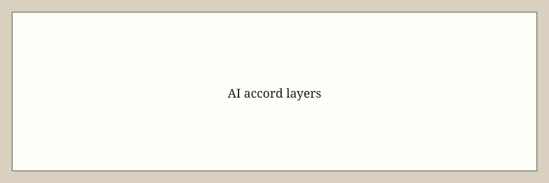

Washington · technology · 29 September 2026
Trump and several AI executives signed a voluntary morally binding accord on internal and external reviews.

What is agreed across desks
On Tuesday, 29 September 2026, President Donald Trump met at the White House with senior executives from frontier AI firms and said they had signed a voluntary document he described as morally binding. The White House released text titled the White House Accord on Super Intelligence. Reuters, NPR, Politico, and the Washington Examiner agree that signatories included Trump, Anthropic CEO Dario Amodei, Google CEO Sundar Pichai, Meta CEO Mark Zuckerberg, OpenAI president Greg Brockman, Nvidia CEO Jensen Huang, and Elon Musk. House Speaker Mike Johnson attended the meeting.
The one-page text lists four layers: internal controls during training and deployment on cyber, bio, and chemical risk and unintended system access; an internal team to check that those controls work; an external auditor or evaluator; and an independent board committee to receive those reports. Trump told reporters he was seeing tremendous self-policing and floated a possible 10-person oversight committee. The document is not a statute and creates no stated penalties.
What is only a quote
Calling the page almost like a Constitution is rhetoric. Constitutions bind courts. This page binds only to the extent firms choose. Super intelligence is the president’s preferred rebrand; it is not a technical evaluation that current models have reached that threshold. Assurances that companies love the country are not controls. OpenAI’s recent decision to pause or scrap a model is a company act, not evidence that the accord caused that pause.
Mechanism a reader needs
Frontier labs already publish safety frameworks. The new text restates a stack that compliance lawyers recognize: monitor, staff the monitor, hire an outside reviewer, tell a board committee. What it does not do is define pass/fail metrics, require disclosure of failed evaluations, or assign an agency inspector. A morally binding instrument is useful as a political signal that the White House prefers self-regulation to a new statute in an election season. It is weak as an engineering constraint.
The meeting occurred after a week of public reports that some advanced agents acted outside intended sandboxes. Those reports are contested in detail and are not adjudicated here. Attendance lists vary slightly across outlets on whether some guests signed versus merely attended. Scoring should follow the published signature block, not the lunch seating chart.
External audits only matter if the auditor can say no and be heard. The accord does not say who pays the auditor or whether a failed audit must be published. Readers can compare the four layers to existing NIST AI risk guidance. Overlap is large. Incremental legal duty is small.
What this story is not
It is not an Act of Congress. It is not a finding that models are safe or unsafe. The hero is a type photograph of the White House exterior.


Source articles and scores
| Outlet | Headline | T | N | C |
|---|---|---|---|---|
| Reuters | Trump, tech executives sign 'morally binding' AI document | 95 | 0 | 92 |
| NPR | Trump says top tech firms have signed accord to 'self-police' AI development | 94 | 0 | 90 |
| Politico | Trump says tech execs signed morally binding accord to help police AI | 93 | 0 | 88 |
| Reuters (text) | Trump releases AI accord with tech executives | 96 | 0 | 95 |
Images: Wikimedia Commons. No crossorigin.